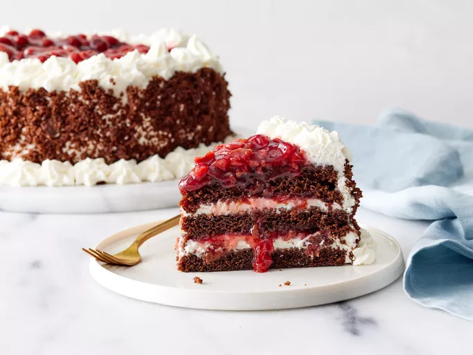

Home
Black Forest Cake

Description
This decadent Black Forest cake features layers of rich, moist chocolate sponge soaked in a sweet cherry liqueur syrup. Each layer is generously filled with a velvety whipped cream frosting and tart Morello cherries, creating a perfect balance of deep chocolate flavors and bright fruit notes.
The exterior is elegantly coated in more whipped cream, then decorated with a dramatic crown of dark chocolate shavings and vibrant maraschino cherries. This classic German dessert is a showstopping centerpiece that brings sophisticated flavor and timeless elegance to any celebration or special occasion.
Ingredients
For the Chocolate Sponge Cake
- 2 cups all-purpose flour
- 2 cups granulated sugar
- ¾ cup unsweetened cocoa powder
- 2 tsp baking powder
- 1 ½ tsp baking soda
- 1 tsp salt
- 2 large eggs
- 1 cup whole milk
- ½ cup vegetable oil
- 1 cup boiling water or hot brewed coffee
For the Cherry Filling & Syrup
- 1 can (approx. 425g) pitted Morello cherries, drained (reserve juice)
- ½ cup sugar
- ¼ cup cherry liqueur (Kirschwasser)
For the Whipped Cream Frosting & Topping
- 4 cups heavy whipping cream, cold
- ½ cup powdered sugar
- 1 tsp vanilla extract
- 1 bar (approx. 100g) dark chocolate, shaved
- Whole fresh or maraschino cherries for decoration
Cooking Instructions
-
Bake the Chocolate Cake: Preheat your oven to 175°C and grease three 8-inch round cake pans. Whisk together the flour, sugar, cocoa powder, baking powder, baking soda, and salt in a large bowl. Add the eggs, milk, and vegetable oil, mixing on medium speed for two minutes. Stir in the boiling water or coffee by hand until the batter is smooth, then pour evenly into the pans. Bake for 25 to 30 minutes, then let the cake layers cool completely.
-
Prepare the Cherry Syrup: Simmer the reserved cherry juice and sugar in a small saucepan over medium heat until the sugar dissolves. Remove from the heat source and stir in the cherry liqueur (Kirschwasser). Let the syrup cool completely.
-
Whip the Cream: Pour the cold heavy whipping cream, powdered sugar, and vanilla extract into a chilled mixing bowl. Beat on medium-high speed until the cream holds stiff peaks, then refrigerate until assembly.
-
Assemble the Layers: Place the first chocolate cake layer on a serving platter and brush it generously with the cherry syrup. Spread a thick layer of whipped cream over the cake and press half of the drained cherries into the cream. Place the second cake layer on top, press down gently, and repeat the syrup, cream, and cherry process.
-
Frost and Decorate: Top with the final cake layer, brush it with the remaining syrup, and frost the top and sides of the cake with the remaining whipped cream. Press the dark chocolate shavings firmly onto the sides and center top of the cake. Pipe decorative whipped cream stars around the top edge and crown each star with a whole cherry.